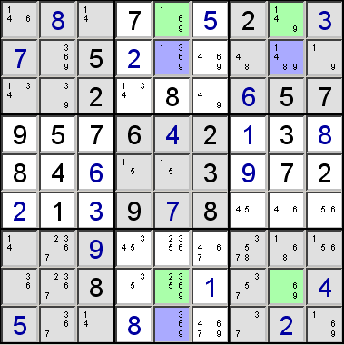

In the puzzle below, the only cells in rows one and eight that can contain a 9 are those coloured green. Since there must be a 9 in both row one and row eight, but they cannot occupy the same column, it follows that either the top-left and bottom-right marked cells contain the 9s, or the bottom-left and top-right cells do. (It can't be the bottom-right and top-right, nor the bottom-left and top-left, as then there would be two 9s in the same column. Similarly, it can't be top-left and top-right, nor bottom-left and bottom-right as then there would be two 9s in the same row.) So, we can't say whether the 9s are in top-left and bottom-right, or bottom-left and top-right, but either way, it excludes 9s from the other cells in both columns. The end result is that 9 can be eliminated from the candidates for other cells in both of the affected columns (coloured blue in this example.)
